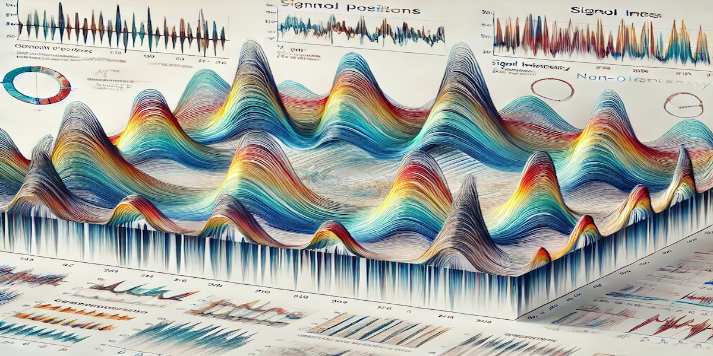
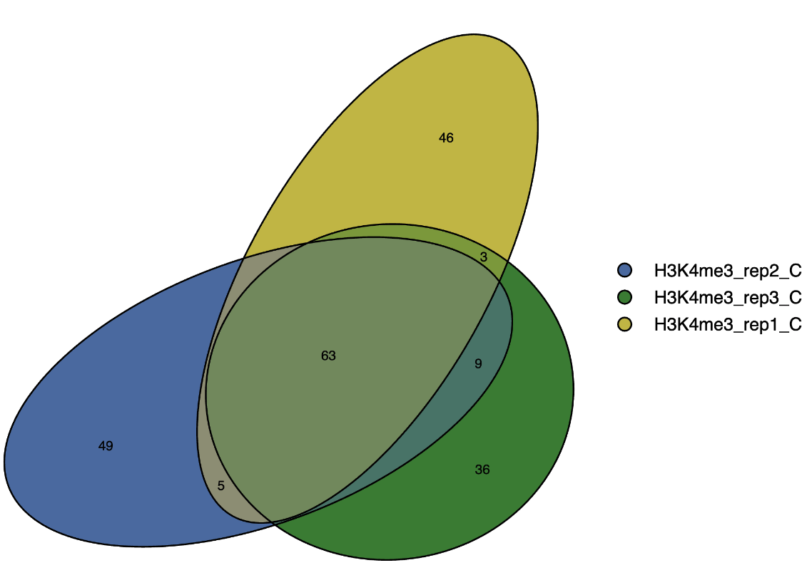
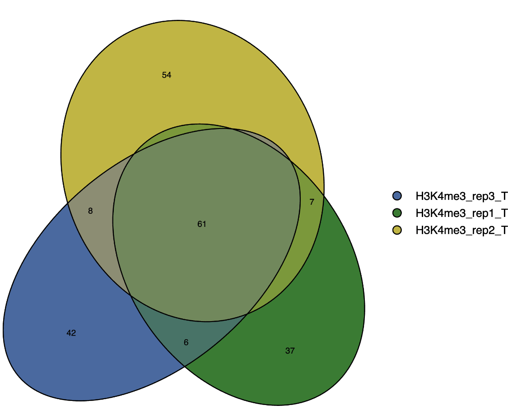
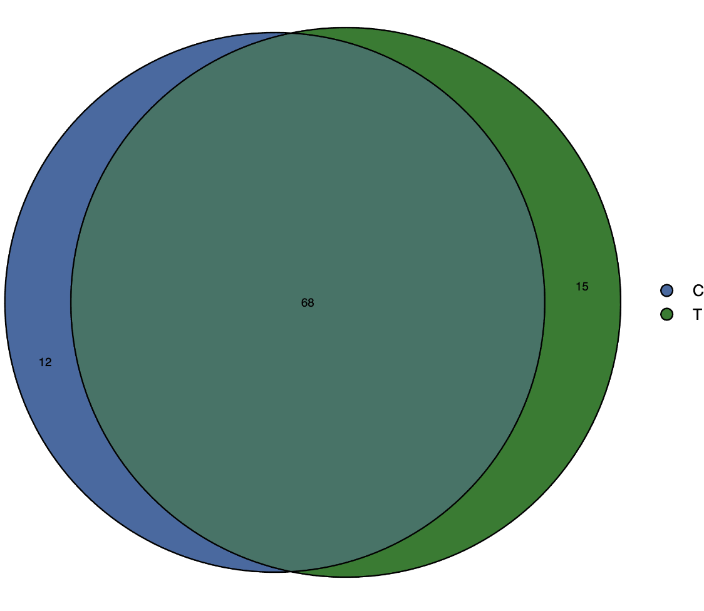

CutandTag_ReplicatePeak_Analysis
Kevin Boyd
2025-05-19


CutandTag_ReplicatePeak_Analysis
 - OpenAI. (2024). Scientific data visualization: Replicate peak analysis in bioinformatics [AI-generated image]. DALL-E. Retrieved from ChatGPT interface.
1) Project Description
CutAndTag_ReplicatePeak_Analysis is a Snakemake pipeline designed to perform downstream analysis on processed Cut-and-Tag sequencing data. Rather than starting from raw FASTQ reads, this pipeline starts with already aligned and filtered BAM files, focusing on the identification of reproducible peaks, the generation of consensus peak sets, and the visualization of overlaps and signal distributions across multiple samples or experimental conditions.
- Note: If you are starting from raw FASTQ files, consider using the CutandTag_Analysis_Snakemake pipeline first. That pipeline handles the initial data processing steps—such as quality control, alignment, and basic filtering—providing you with the cleaned and aligned data that serve as the input for CutAndTag_ReplicatePeak_Analysis.
Key Features
Peak Calling with MACS2 on Individual and Merged Samples: Each replicate is processed independently using MACS2 to call peaks. In parallel, biological replicates defined by the
Setcolumn insamples.csvare merged at the BAM level, and a second MACS2 peak calling is performed on the merged BAM to capture reproducible signal across replicates.Reproducible Consensus Peak Sets: A consensus peak set is generated by comparing merged peaks to individual replicate peaks. Peaks are retained only if they are supported by a minimum number of replicates found in the
congif.yml(e.g., 2 out of 3), ensuring biological reproducibility while reducing noise.Signal Preservation Through Merged Read Support: Reads are extracted directly from the merged BAM preserving read-level signal. This enables more accurate representation of genomic signal in consensus peak regions.
Consensus Peak Conversion to Visualization Formats: Consensus peak regions are used to extract reads and generate sorted BAM and BigWig files. These outputs are optimized for visualization in genome browsers and for downstream comparative analysis.
Euler Plots of Replicate and Condition Overlaps: Euler diagrams are created to visualize how consensus peaks arise from replicate overlaps within a set. Additional Euler plots show condition-level peak set relationships for each mark, providing clear insight into reproducibility and condition-specific differences. Euler plots color and size can be set in the
config.yml.Midpoint and Overlap Quantification: Consensus peaks are processed to determine their midpoints and identify overlaps across all sets. This provides a standardized reference point for comparing distributions and regional enrichments.
High-Resolution Heatmaps of Signal Intensity: The pipeline generates heatmaps centered on consensus peak midpoints. These plots visualize the distribution and intensity of signal across replicates, conditions, or sample sets, making trends in coverage and peak architecture easy to interpret. Heatmaps are customizable in the
config.ymlalong with the ability to toggle them on and off. In thesampleOrdersection the first sample will set the order of the bed file in the heatmap.
2) Intended Use Case
This pipeline is ideal for researchers who have already processed their Cut-and-Tag data through preliminary steps such as quality control, alignment, and filtering (e.g., by using CutandTag_Analysis_Snakemake). After obtaining high-quality aligned BAM files, you can use CutAndTag_ReplicatePeak_Analysis to:
- Identify reproducible peaks across replicates or experimental conditions.
- Generate integrative visual summaries of peak overlaps.
- Compare signal intensity profiles around consensus peak midpoints.
By integrating this two-step approach, you ensure a robust, end-to-end workflow for your Cut-and-Tag sequencing experiments.
3) Dependencies and Configuration
All parameters (e.g., genome size, MACS2 q-values, minimum number of
overlapping samples for consensus peaks, paths to executables) are
controlled via the config/config.yml file.
Explanation of config.yml
- Note. Make sure to check config.yml for the appropriate genome
The config.yml file controls genome settings, tool
versions, and other workflow parameters.
Changing Genomes
By default, the config.yml is set up for mouse (mm10).
Running human (hg38) samples requires changing these values to match the
hg38 parameters, which are already provided in config.yml
as comments.
To switch from mm10 to hg38 (or vice versa), you’ll need to change: -
Genome and Effective Genome Size: Update genome and
effective genomes sizes - For human (hg38), set
genome: "hs" and
effective_genome_size: 2913022398 - For mouse (mm10), set
genome: "mm" and
effective_genome_size: 2730871774
- Chrom_sizes File: Point chrom_sizes to the correct
chromosome sizes file.
- For human (hg38), set
resources/hg38.chrom.sizes - For mouse (mm10), set
resources/mm10.chrom.sizes
- For human (hg38), set
All information required for switching between hg38 and mm10 is
included in config.yml, commented out next to the default
settings. Simply uncomment and modify these values as needed when
changing the genome from mm10 to hg38.
Tool Versions and Modules The config.yml file also
specifies versions of tools and modules (e.g., deeptools, macs2,
samtools, bedtools, R) used by the pipeline. These versions help
maintain reproducibility and ensure that the pipeline runs consistently
across different computing environments.
4) Tools & Modules
The pipeline relies on bioinformatics tools, including:
- MACS2 for peak calling
- bedtools and samtools for peak and alignment format conversions
- deeptools for coverage and matrix computation, as well as for generating heatmaps
- R with Bioconductor packages for merging peaks, checking overlap, creating midpoints, and creating Euler diagrams
5) Example Data
A compact, pre-processed dataset aligned to mm10 is included in this repository to quickly test the pipeline and validate that your environment is set up correctly. This small example replicates the pipeline’s key steps from peak calling through to final visualization. Visualization examlpes are shown below in section 7.
6) Explanation of samples.csv
Note. Make sure to check sample.csv before each run
samples.csv specifies the samples to analyze, their BAM
file locations, and how they are grouped into sets. The file has three
columns: sample, bam, and
set.
Example samples.csv:
sample,bam,set,mark,condition
H3K27ac_rep1_C,resources/H3K27ac_rep1_C_PB042_chr1_1_10Mb.bam,H3K27ac_C,H3K27ac,C
H3K27ac_rep1_T,resources/H3K27ac_rep1_T_PB045_chr1_1_10Mb.bam,H3K27ac_T,H3K27ac,T
H3K27ac_rep2_C,resources/H3K27ac_rep2_C_PB052_chr1_1_10Mb.bam,H3K27ac_C,H3K27ac,C
H3K27ac_rep2_T,resources/H3K27ac_rep2_T_PB055_chr1_1_10Mb.bam,H3K27ac_T,H3K27ac,T
H3K27ac_rep3_C,resources/H3K27ac_rep3_C_PB062_chr1_1_10Mb.bam,H3K27ac_C,H3K27ac,C
H3K27ac_rep3_T,resources/H3K27ac_rep3_T_PB065_chr1_1_10Mb.bam,H3K27ac_T,H3K27ac,Tsample: Unique sample name
- used for individual sample output filenames and to identify samples in
consensus peak euler plot
bam: Path to the aligned BAM file
- sorted.bam is usually best but other .bam files can be used
set: Sample grouping for consensus peak analysis -
**{mark}_{condition} - sets naming for consensus peak files
downstream. All samples with the same Set** name will be
combined to generate a consensus peak set. - MUST MATCH MARK AND
CONDITION (Ex: H3K27ac_Control or H3K27ac_C)
mark: Indicates the type of histone mark or other
feature captured - all samples with the same mark name will be grouped
for subsequent control vs treatment plots - MUST MATCH MARK NAME IN
SET
condition: Specifies the experimental condition - these
values are used to distinguish groups in control vs treatment overlap
plots for each mark - MUST MATCH CONDITION NAME IN SET
7) Examples of Output from Test Files in Repo
Below are some example plots generated by the pipeline.
| 1. H3K4me3_C_eulerPlot | 2. H3K4me3_T_eulerPlot |
|---|---|
|  |  |
| Euler plot of individual sample overlaps in Condition C. Illustrates consensus peaks | Euler plot of individual sample overlaps in Condition T. Illustrates consensus peaks |
| 3. H3K4me3_eulerPlot |
|---|
|  |
| Euler plot showing consensus peak overlap of conditions in each mark. H3K4me3 shown. |
| 4. HeatPlots_All_Samples | 5. HeatPlots_Unique_Samples |
|---|---|
 |
 |
| Heatmap showing signal distributions for all samples midpoints. | Heatmap showing signal distributions for all samples midpoints separated by sample |
8) Instructions to run on Slurm managed HPC
A. Download version controlled repository
wget https://github.com/JK-Cobre-Help/CutandTag_ReplicatePeak_Analysis/releases/download/v1.0.5/CutandTag_ReplicatePeak_Analysis-1.0.5.tar.gz
tar -xzf CutandTag_ReplicatePeak_Analysis-1.0.5.tar.gz
rm CutandTag_ReplicatePeak_Analysis-1.0.5.tar.gz
cd CutandTag_ReplicatePeak_Analysis-1.0.5B. Load modules
module purge
module load slurm python/3.10 pandas/2.2.3 numpy/1.22.3 matplotlib/3.7.1C. Modify samples and config file
vim samples.csv
vim config.ymlD. Dry Run
snakemake -nprE. Run on HPC with config.yml options
sbatch --wrap="snakemake -j 999 --use-envmodules --latency-wait 60 --cluster-config config/cluster_config.yml --cluster 'sbatch -A {cluster.account} -p {cluster.partition} --cpus-per-task {cluster.cpus-per-task} --time {cluster.time} --mem {cluster.mem} --output {cluster.output} --job-name {cluster.name}'"